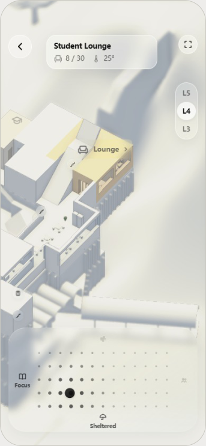

Early in the semester, I was already imagining what we could make at Yusof Ishak House. In our studio consultations, Christophe kept asking what we meant by transparency and what it would mean for people using the building.
Yusof Ishak House, Singapore
Entry 01
Am I Solving the Right Problem?
September | Research and Problem Finding
We imagined signs driven by wind or light and wondered how people might interact with the building if we set aside today's technical limits. I enjoyed seeing how far we could take those ideas. Whenever I felt stuck, thinking up another interaction felt like a way to move forward.
That changed when we tried to put the ideas into one story. I could explain what interested me about each one. Once I put them alongside what we'd learned from students, I couldn't explain why they belonged in the same project. I finally understood why Christophe kept asking about transparency. We had ideas for how a sign might work, and we still needed to decide what it should make clearer. I appreciated that he stayed with the question long enough for me to see where we needed to start again.
My key learning. When I struggle to explain why an idea belongs in a project, I go back to the evidence and check what I'm asking the design to change.
Entry 02
When Should I Let an Idea Go?
September–October | Exploring and Giving Up Ideas
The wind-driven sign was hard for me to give up. I wanted to make something people could encounter in the building. One teammate thought we'd probably end up with an app and wanted to spend more time looking at existing ones. I wanted to give the physical ideas a little longer.
Then we had to think about where the sign would actually go. Wind varied from one part of the building to another, and in the time we had, we couldn't work out how to make it reliable. I still liked it when we moved away from it. Looking back, I wish I'd turned that uncertainty into a smaller question sooner. Where could it work reliably enough to be worth developing?
My key learning. When I want more time for an idea, I should be able to say what I would use that time to find out.
Entry 03
Was the Exploration Worth It?
November | Looking Back on Iteration

Grounded website · Finding a spot
When we settled on the app, I wondered if we could have saved time by going straight there. By the end, I was genuinely happy with what we'd made. The draggable dot is the part I keep coming back to. It gave people a way to express a mix of preferences in one gesture. I'd started out hoping for a less familiar format, and I found something worth exploring in that one small interaction.
My key learning. I'd judge the exploration by what it changed in the experience. In this case, we came back to a familiar idea and changed how people could use it.
Final room status light
Entry 04
Learning When to Stop
Final Stage | Decision-Making, Teamwork and Personal Growth
After midterm, we needed to narrow the project. I kept giving our conversations room to run because that had helped us find ideas early on. By then, we were still bringing in new possibilities and trying to persuade one another. I was slow to notice that what had helped us at the start was making it harder to reach a decision.
Around the time of the UCI presentation, it became harder to ignore how differently we understood the project. There were times when I couldn't follow what my teammate was asking, and I wondered whether they could follow what I was proposing. From where I sit now, I can see how much time we spent replying to each other without getting closer to a decision. In the room, I had an idea I wanted to keep. I thought of myself as a good listener, and it took looking back to see how selective my listening had become when I cared about the answer.
Working together felt easier whenever one of us stepped back from defending a position. By the end, I also felt more involved because I could picture what we could finish in the time we had. Next time a conversation starts to repeat itself, I'd like to pause and try putting my teammate's concern in words they'd agree with.
My key learning. After our final presentation, Christophe said that the direction we take depends on how we look at the problem. I think about that when I remember how long we spent trying to persuade each other. Before I make the case for my idea again, I want to ask whether we agree on what we're trying to change.